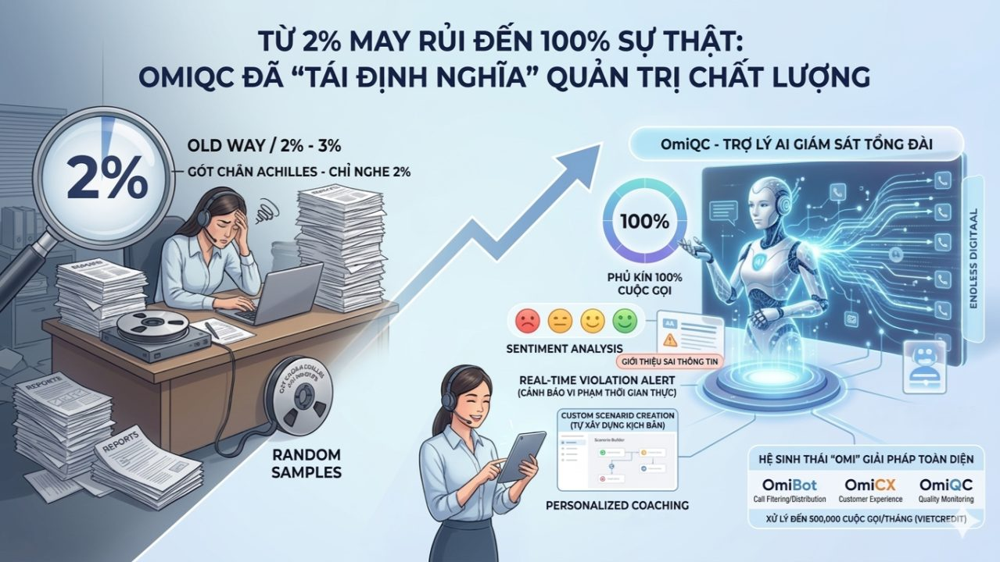

Trang chủ › Blog › Contact Center Insights · Mùa 1
Chất lượng và chi phí
Vấn đề lớn nhất của QA thủ công

Ở Kỳ #7, chúng ta đã cùng nhìn thẳng vào "gót chân Achilles" của QA truyền thống: Việc chỉ có thể nghe lại 1% - 3% cuộc gọi khiến doanh nghiệp hoàn toàn "mù tốn" với 97% dữ liệu còn lại.
Nếu Agent đang phải gánh 70 cuộc gọi/ngày (#Kỳ 5) và đối mặt với nguy cơ Burnout (#Kỳ 6), thì việc chỉ đánh giá năng lực của họ dựa trên vài cuộc gọi ngẫu nhiên là một sự thiếu công bằng và tiềm ẩn rủi ro pháp lý cực lớn. Vậy làm thế nào để "giải cứu" vùng tối dữ liệu khổng lồ đó?
Câu trả lời chính là OmiQC – TRỢ LÝ AI GIÁM SÁT TỔNG ĐÀI THÔNG MINH đột phá từ Minh Phúc Transformation (MPT).
1. AI không chỉ nghe, AI "thấu hiểu" để hành động
Khác với QA thủ công chỉ dừng lại ở việc nghe và ghi chép, OmiQC sử dụng quy trình công nghệ tiên tiến: Audio -> ASR (Speech-to-Text) -> Gen AI -> Report. Sức mạnh của AI và Machine Learning cho phép:
Phủ kín 100% cuộc gọi: Không còn khái niệm "chấm điểm chọn lọc". TẤT CẢ tương tác đều được phân tích tự động ngay sau khi kết thúc.
Đọc vị cảm xúc (Sentiment Analysis): Với độ chính xác từ 85-95%, AI đánh giá sát thái độ người nói (tích cực, tiêu cực, trung tính), nhận diện cả ngữ điệu và ngôn ngữ vùng miền. Bạn sẽ biết khách hàng thực sự hài lòng hay đang âm thầm rời bỏ thương hiệu.
Phát hiện lỗi Real-time: Hệ thống cảnh báo ngay lập tức các vi phạm quy trình, từ khóa nhạy cảm hoặc việc giới thiệu thông tin không được phép, giúp doanh nghiệp ra quyết định dựa trên dữ liệu thực (Data-driven decision).
2. OmiQC: "Vũ khí" thực chiến giúp QA làm việc nhàn hơn, chuẩn hơn
Nhiều người hỏi: "AI có thay thế hoàn toàn QA?". Tại MPT, chúng tôi tin rằng AI là "cánh tay nối dài" để con người làm những việc giá trị hơn:
Tự xây dựng kịch bản thông minh: Đây là điểm khác biệt lớn nhất. OmiQC cung cấp giao diện trực quan để người dùng (dù không rành kỹ thuật) tự thiết lập bộ tiêu chí chấm điểm riêng. Mục đích? Để AI thấu hiểu đúng nghiệp vụ đặc thù của từng doanh nghiệp, thích ứng tức thì với các chiến dịch mới mà không cần chờ đợi đội ngũ IT lập trình lại.
Lộ trình Coaching cá nhân hóa: AI không chỉ "soi lỗi", nó chỉ ra chính xác Agent đang "hổng" kiến thức ở đâu để giám sát xây dựng bài test hoặc đào tạo lại ngay lập tức thay vì phê bình chung chung.
Tiết kiệm 70% chi phí vận hành: Tự động hóa các tác vụ lặp đi lặp lại giúp giải phóng đội ngũ QA khỏi đống bản ghi âm khổng lồ, tập trung vào phân tích xu hướng (Trending) và chiến lược khách hàng.
3. Hệ sinh thái "Omi" – Giải pháp toàn diện từ MPT
Chúng tôi không chỉ bán một phần mềm, chúng tôi mang đến một hệ sinh thái vận hành tối ưu:
OmiBot: Lọc và điều phối cuộc gọi thông minh.
OmiCX: Quản trị trải nghiệm đa kênh hợp nhất.
OmiQC: Chốt chặn chất lượng cuối cùng.
Sự kết hợp này (đã được chứng minh qua các dự án xử lý như tại VietCredit với 500.000 cuộc gọi/tháng) giúp doanh nghiệp tối ưu từng giây tương tác, biến Contact Center trở thành một "trung tâm dữ liệu chiến lược".
Lời kết:
Một hãng K bị mất 12 tấn Socola có thể tìm lại, nhưng thất lạc 98% Insight khách hàng là tổn thất không thể bù đắp. Đã đến lúc doanh nghiệp cần một "chiếc kính hiển vi" thông minh hơn để nhìn thấu mọi tương tác và bảo vệ giá trị thương hiệu.
👉 Góc thảo luận: Các Sếp nhà mình đã tìm thấy "12 tấn" Insight của doanh nghiệp mình chưa? Hay vẫn đang để AI "chạy bằng cơm" nghe 2% mỗi ngày? Comment ngay để nhận tài liệu chi tiết về OmiQC nhé! 🍫📉